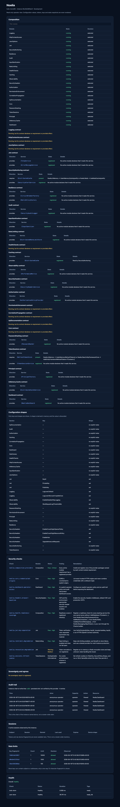
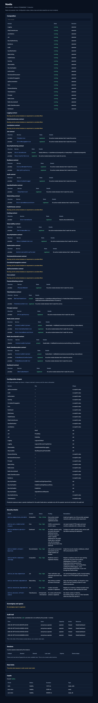

The dashboard, in each stage
Real screenshots from a real run, captured from the stack by
eng/capture-dashboards.mjs rather than drawn. The dashboard is
read-only and value-free: configuration keys appear, configuration values
never do.

